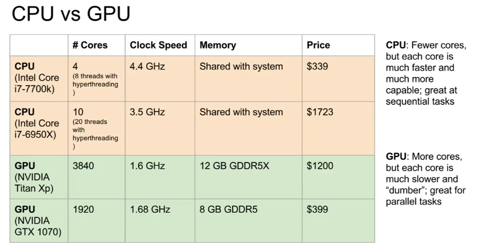

CS231N (CS224N)- * Lecture 8 - TF and Pytorch Tutorial
CPU vs GPU (Appendix 3)
Deep Learning Framework
Allows you to easily build big computational graphs, easily compute gradients, and have optimizations done for you. Numpy can’t run on GPU and you have to compute your own gradients.
Tensorflow - Static computational graph, better for deployment
Appendix 1
You need to learn a new functional graph language to work with tf. However, The language is very optimized.
First define computational graph, then run the graph many times (Appendix 3) - Allows graph optimization.
Once graph is built, can serialize it and run it without the code that built the graph. You can train it in Python and deploy it in C++ or something.
Requires special tensorflow control flow operator to determine control logic in graph before we run it.
Requires special tensorflow control flow looping constraicts `tf.foldl` determine loop logic in graph before we run it (functional programming)
PyTorch- Dynamic computational graph, better for iteration
Appendix 2
You can use the imperative programming logic that you’re used to.
Creates new computataional graph each iteration (dynamic computational graph). Always need to keep the original code around if you want to keep using the graph.
However, code is a lot cleaner for conditionals and loops.
Recurrent Networks or Recursive Networks use different length graphs. This is harder to do in TF (static graph) than PyTorch (dynamic graph)
Facebook has Caffe2 for deployment, where you fill out a model template and then can deploy it.
High Level Comparison Between the Three
Appendices
Appendix 1:
Tensorflow
Vanilla Tensorflow Code (copies tf.placeholder from CPU to GPU each call, inefficinent )
Using tf.Variable to avoid copying from CPU to GPU each call
You have to use tf.assign to update tf.Variables
Adding Dummies to make sure that intermediate updates are computed
Tf will not compute any values not necessary to computing the outputs. Therefore, you have to make sure that everything that you want to compute is explicitly output (and set as ‘_’ ). This helps the tf optimizer know what to compute.
Use tf.train (GradientDescentOptimizer) instead of writing the update step yourself
Use tf.loss (mean_squared_error) instaed of computing the loss yourself
Use tf.layers to automatically set up weights (and bias), initializations, nonlinearity instaed of computing those yourself
Other Nice tf libraries
Appendix 2:
Pytorch
Pytorch Tensors are basically numpy arrays that live in CPU/GPU (.cuda)
PyTorch Variabes are Nodes in a computational graph. They include a .data and a .grad attribute.
Pytorch Variables and Tensors have exactly the same API
Make sure you zero out the gradients before you recompute them!
You can make custom autograd functions in pytorch, although usually you won’t need to.
Use pytorch.nn as a high level wrapper for working with neural nets, like Keras
Use pytorch.optim to select different optimizers
Define Modules with torch.nn.module
Use DataLoader to get minibatching, shuffling, multithreading funcitonality
Use Pytorch Pretrained Models (for vision it’s torchvision)
Tensorflow vs PyTorch: Static Graphs vs Dynamic Graphs. Loops and Conditionals
Appendix 3
CUDA - Write C-like code that runs directly on the GPU
- Higher level APIs - cuBLAS, cuFFT, cuDNN, etc
- Use cuDNN, 3x faster than unoptimized CUDA.
OpenCL
- Similar to UCA but runs on anything
Data Reads can be bottleneck in training. Solutions:
- Read all data into RAM
- Use SSD instead of HDD
- Use multiple CPU threads and prefetch data and buffer it in RAM.
GPU has their own RAM on the chip

Using cuDNN optimizations gives 3x speed over vanilla CUDA